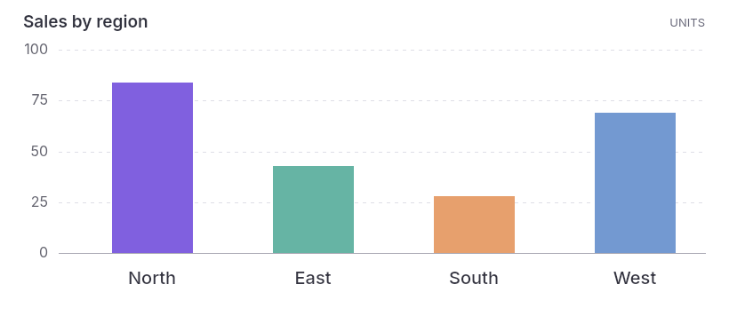
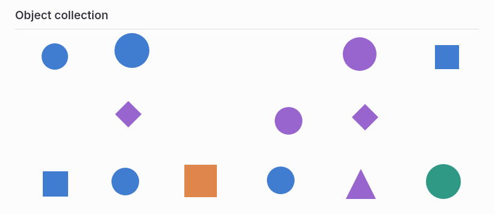
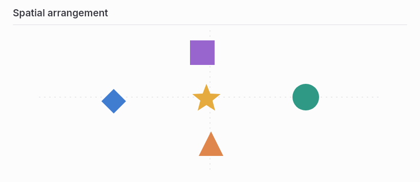

Live Evaluation Studio
Run npm run studio for 120 freshly generated images across 20 reasoning tasks. The smaller pilot covers chart matching, a warehouse bin audit, wallpaper symmetry and independent column progressions.
Run the pipeline
Extract the framework and run these commands from its root with Node.js 22 or newer.
npm ci
npm run benchmarkFind the PNG dataset in artifacts/smoke/dataset and the HTML and JSON scorecards in artifacts/smoke/run.
Reference evaluation
All 54 images received a response. Inspect the skill breakdown and six examples where the model missed the verified answer.
View 54-image reportView 540-image report · 291 correct across all three skills.



Use your own model
Run the OpenAI-compatible adapter, implement a JavaScript adapter, or score a JSONL file exported by your own inference code. Each model receives a PNG and a question.
node framework/cli.cjs score \
--dataset artifacts/smoke/dataset \
--predictions predictions.jsonl \
--model my-model --out artifacts/my-runFrozen regression suite
The download contains PNGs, public prompts, private answer keys, per-image pixel measurements and a dataset fingerprint. The included GitHub Actions workflow checks new runs against the reference scores.